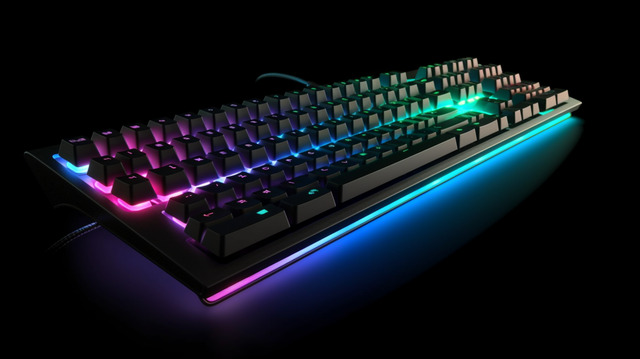
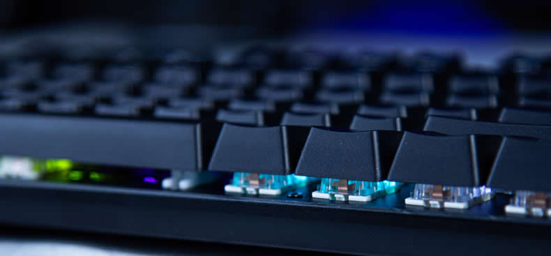
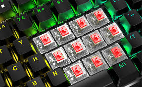
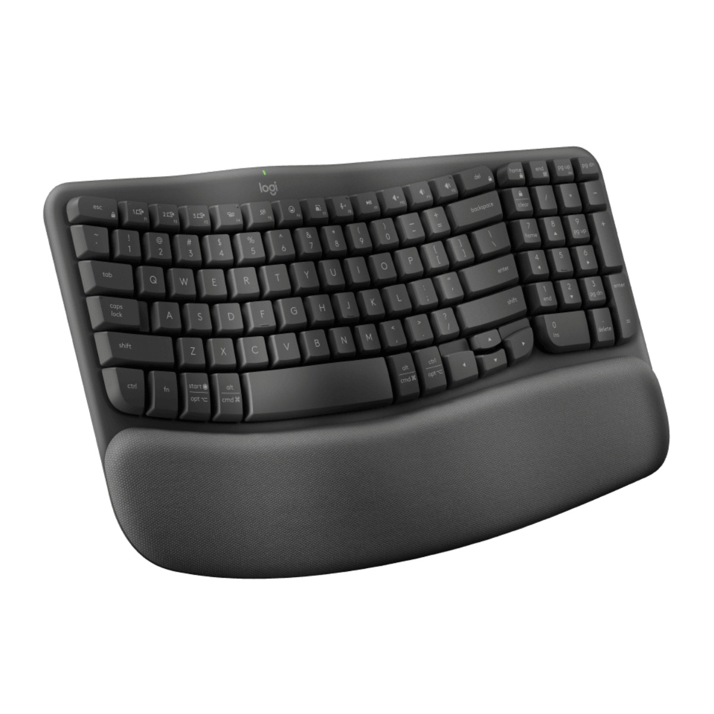
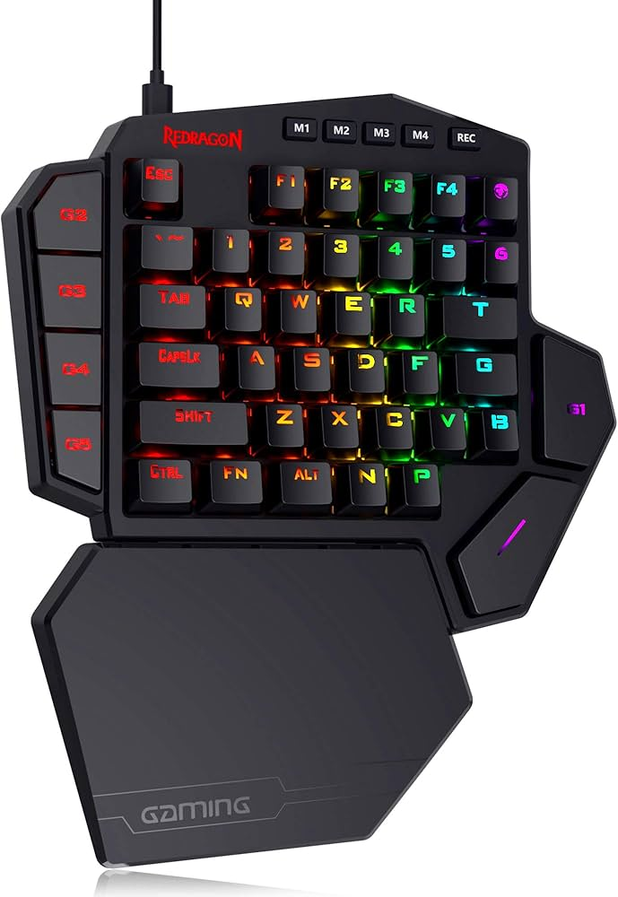
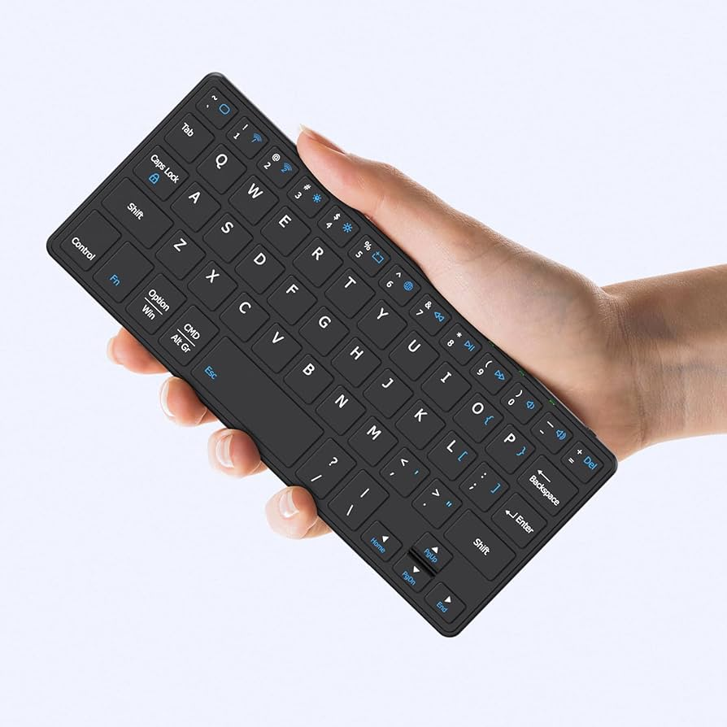
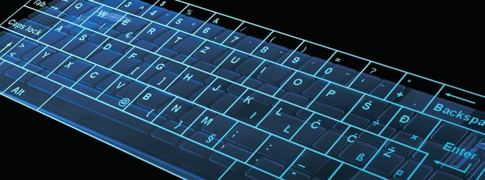
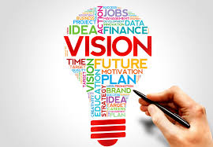

Usa switches individuales, más rápido y resistente.

Más silencioso y económico, común en oficinas.

Diseñado para comodidad y menos cansancio.

Incluye luces RGB y alta velocidad de respuesta.

Funciona por Bluetooth o USB sin cables.

Se usa en pantallas táctiles o dispositivos móviles.
Brindar información clara, sencilla y educativa sobre los diferentes tipos de teclados, ayudando a los usuarios a comprender sus características, funciones y usos de forma visual, moderna y fácil de entender.

Ser una página web informativa reconocida por su contenido educativo y diseño moderno, enfocada en la tecnología y en la enseñanza de periféricos de computadora de manera interactiva y accesible para todos los usuarios.